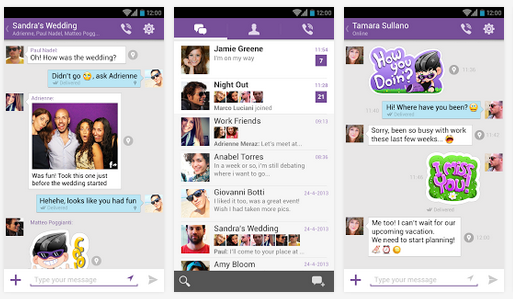

Viber és una aplicació per a Windows, Mac, iOs, Android, Windows Phone i Blackberry que permet als usuaris realitzar trucades gratuïtes de veu i enviar missatges de text gratis a qualsevol persona que tingui l'aplicació instalada i tingui connexió 3G o WiFi. Té més de 100 milions d'usuaris.
Viber va ser llençat oficialment el 2 de desembre de 2010 exclusivament per a iOs. La versió per a Android va soritr el 19 de juliol de 2012.
Funcionament
Viber funciona com totes les aplicacions de missatgeria instantània o servei de trucades VoIP.
Quan envies un missatge, aquest és enviat per l'antena de comunicacions que tinguis més a prop, després aquest és enviat als servidors de LINE, i quan ha passat pels servidors, es reenviat a l'antena que estigui més a prop de la persona a qui li hagis enviat el missatge, i aquest és descarregat al seu mòbil. Això funciona tant amb les imatges, vídeos, audios i "stickers" i les trucades.

Funcions i Prestacions
Aquesta aplicació ens permet comunicar-nos amb qualsevol persona del món ja sigui un mòbil, la mateixa aplicació o a un ordinador que tingui instalada la aplicació gratis.